Two cuts from one recording session. Thumbnails are stand-ins (existing screenshots and generated cards); the real frames come from your screen recordings listed in 03-shot-list.md. Green segments are long narrative beats, orange are 3–5 s feature montages, dark are full-screen graphics.
VERIFASSUR_X — Teaser about 3:40 · planned 3:43 · 306 words (2:21 at 130 wpm)
LinkedIn, sales e-mail, first contact with a prospect or investor. Stands alone; no prior knowledge.
T1T2T3T4T5T6T7T8T9T10
T1
Cold open — three questions
0:00–0:18 · 18 s · long · 26/39 words
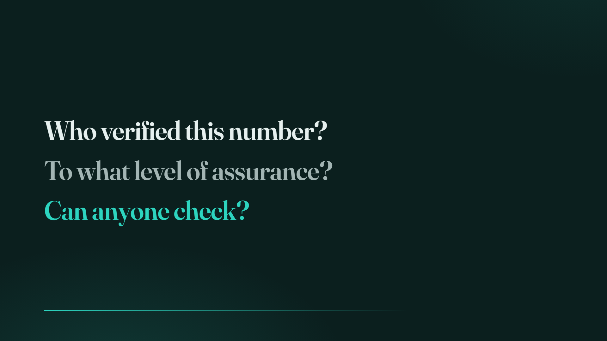
M01 · graphic · 9 s Who verified this number? / To what level? / Can anyone check?
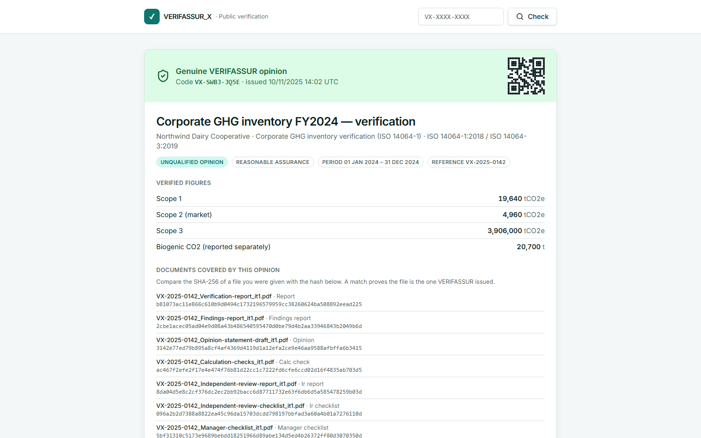
C19 · (dialog) · 9 s Public verification page: the code is typed, the green banner appears.
Who verified this number? To what level of assurance? And can anyone check?
Most verification statements live in an inbox. They cannot answer.
This one can.
Music Silence for the first 4 s, then a single low sustained note under the questions; the bed starts on the cut to the public page.
Edit Cut from the third question straight to the public page with the code half-typed. Let the green banner land on "This one can."
T2
Title
0:18–0:25 · 7 s · card · 0/15 words
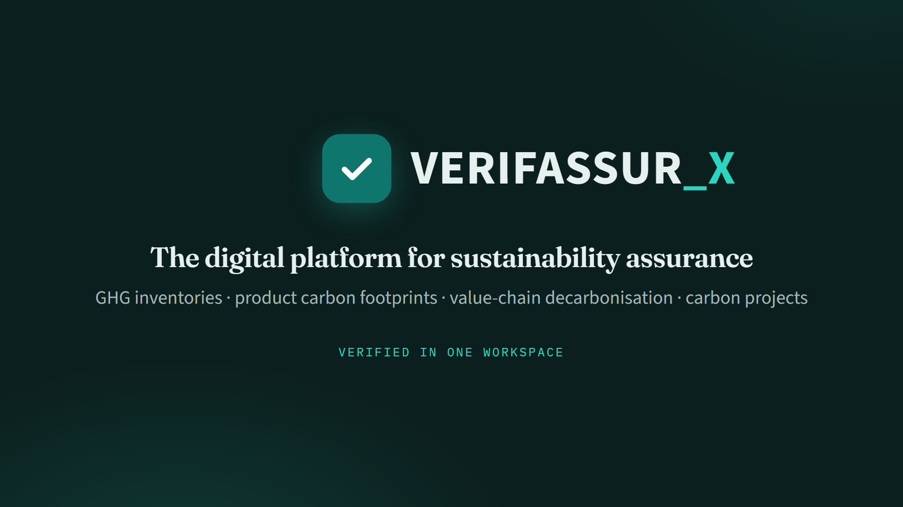
T02 · graphic · 7 s VERIFASSUR_X · The digital platform for sustainability assurance
no narration
Music Bed rises; one soft hit on the logo.
Edit Cross-dissolve in from the public page over 0.5 s; hold; dip to ink.
T3
The problem
0:25–0:58 · 33 s · long · 49/71 words
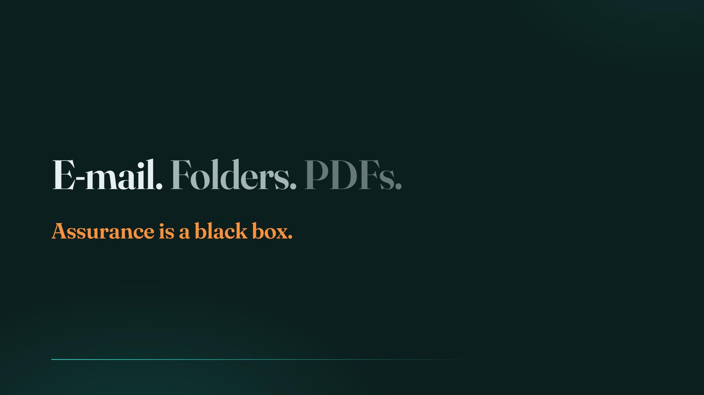
M02 · graphic · 6 s E-mail. Folders. PDFs. → Assurance is a black box.
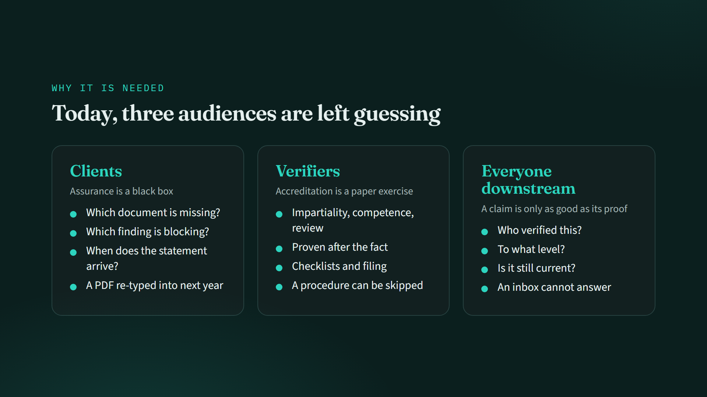
T04 · graphic · 14 s Clients · Verifiers · Everyone downstream (three columns, revealed one at a time in the editor)
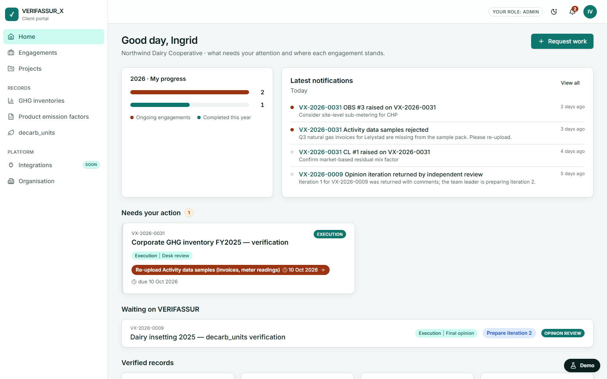
C02 · Ingrid Vos · 13 s Slow scroll of the client home, desaturated 30 % with a soft vignette until the next scene.
An assurance engagement today runs on e-mail, shared folders and spreadsheets.
For the client, it is a black box: what is missing, what is blocking, when will the opinion arrive.
For the verifier, accreditation is a paper exercise.
And downstream, a claim is only as good as its proof.
Music Sparse. Bed at −30 dB, no percussion.
Edit Reveal the three columns of T04 as the narration names each audience (wipe or fade per column). The home-page scroll under the last sentence is the first glimpse of the product; keep it muted and let the next scene bring the colour back.
T4
What it is
0:58–1:35 · 37 s · long · 62/80 words
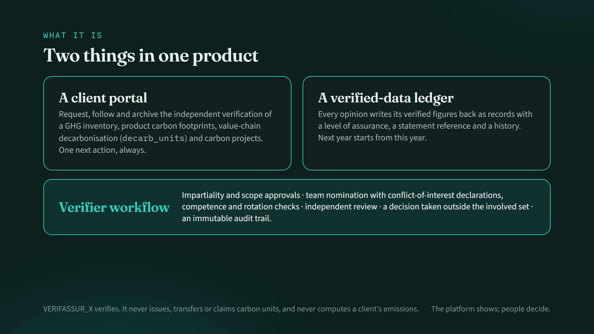
M06 · graphic · 7 s Two things in one product: Client portal · Verified-data ledger · (Verifier workflow underneath)C02 · Ingrid Vos · 10 s Client home in full colour: progress, Needs your action, Verified records.
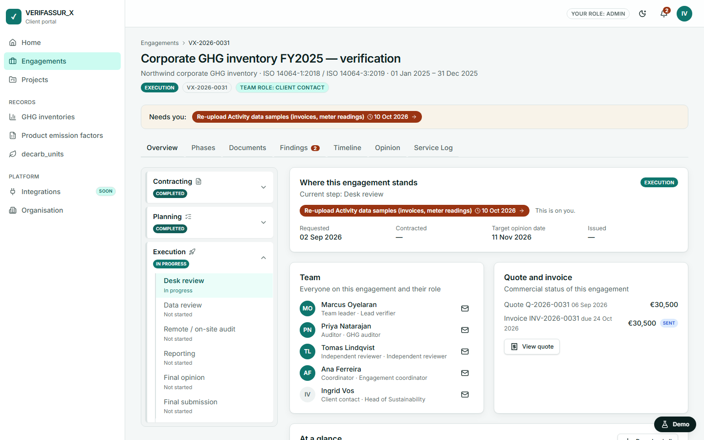
C09 · Ingrid Vos · 8 s Engagement overview: phase rail, next action, team, level of assurance.
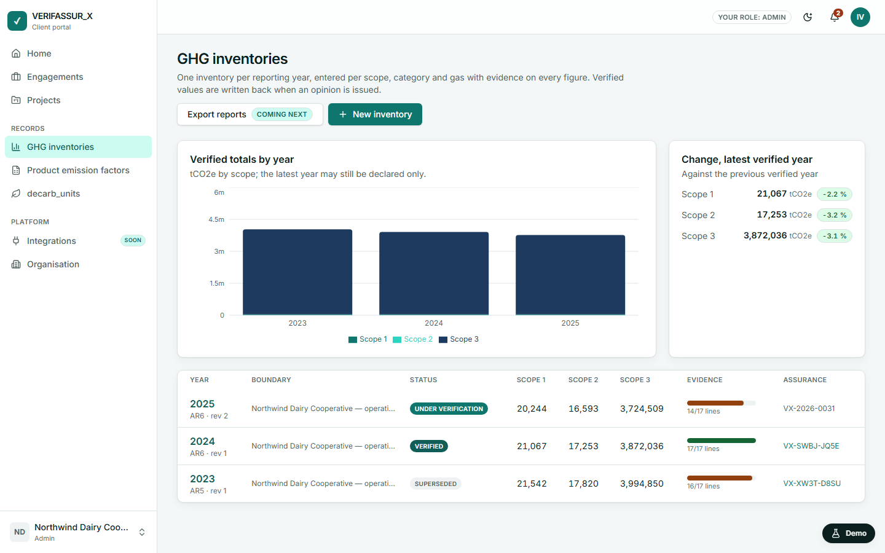
C22 · Ingrid Vos · 7 s GHG inventory 2025 with evidence chips.
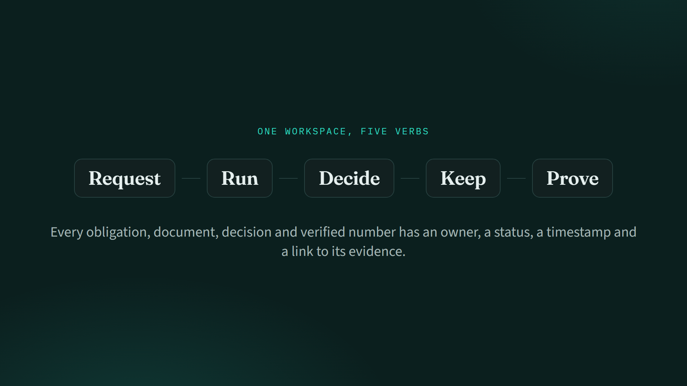
M03 · graphic · 5 s Request → Run → Decide → Keep → Prove
VERIFASSUR_X replaces the black box with one workspace.
A client portal, where a company requests, follows and archives the verification of its GHG inventory, its product footprints and its value-chain decarbonisation.
A verified-data ledger, where every opinion writes its figures back as records you can prove.
And behind both, a verifier workflow that is accreditation-grade by construction.
The platform shows. People decide.
Music Bed opens up: percussion enters on "one workspace".
Edit Colour returns on the cut to C02. The flow animation M03 at the end is the bridge into the montage; its five words become the section labels.
T5
Montage — Request and Run
1:35–1:59 · 24 s · montage · 36/52 words
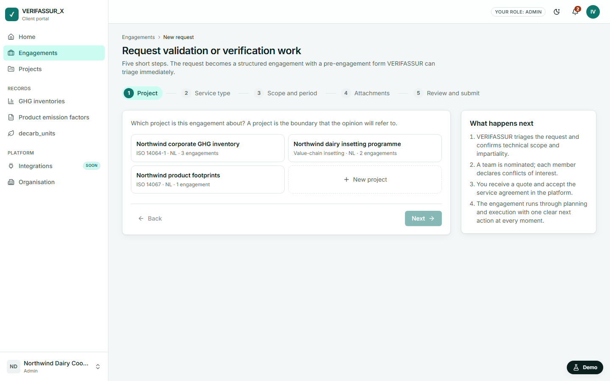
C04 · Ingrid Vos · 5 s Request wizard · five stepsC03 · Ingrid Vos · 4 s One next action, always
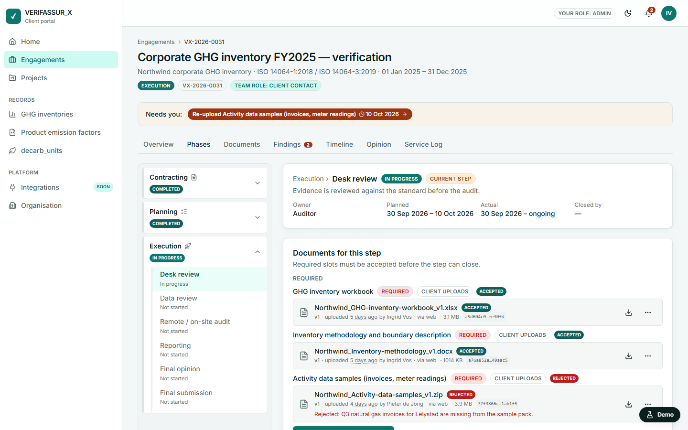
C10 · Ingrid Vos · 5 s Versioned evidence · SHA-256
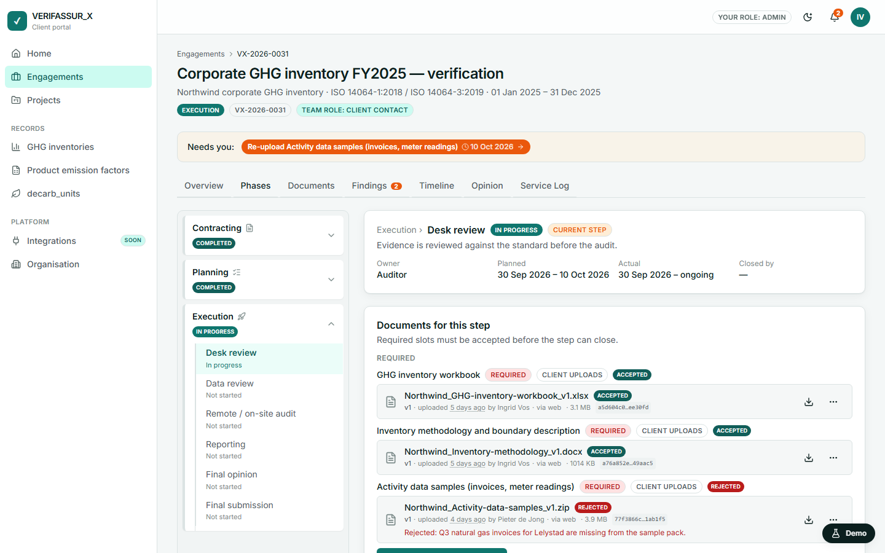
C08 · Amina Wanjiru · 4 s Agreement accepted · name, time, hash
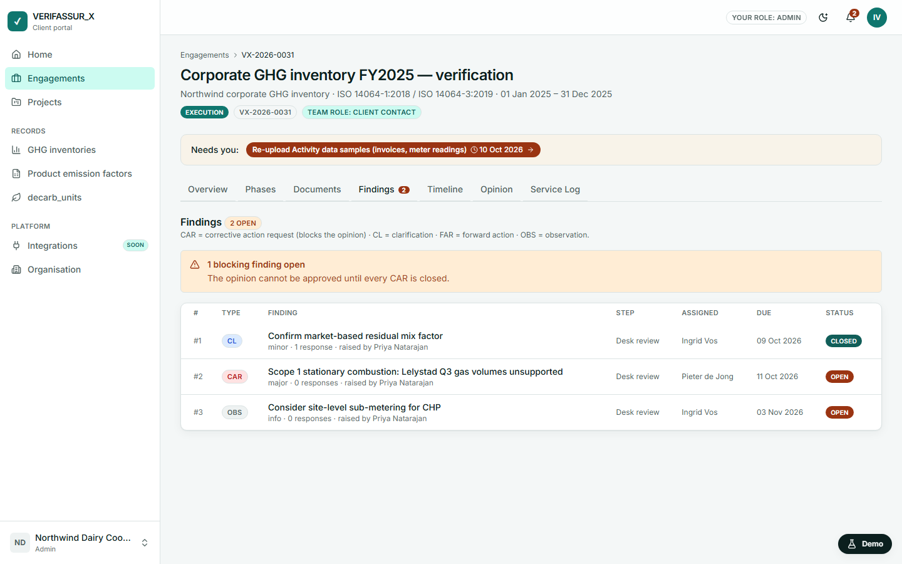
C13 · Pieter de Jong · 6 s Findings block the opinion until closed
Request in five steps.
One next action, always.
Evidence in versioned slots, each with a hash.
An agreement accepted with a name, a time and a hash.
Findings that block the opinion until they are closed.
Music Montage pulse: a clear beat; cut on the beat.
Edit One label chip per clip, bottom-left, in for the full clip. Subtle push-in (103 → 108 %) on each clip. Hard cuts, no dissolves.
T6
Montage — Decide
1:59–2:25 · 26 s · montage · 35/56 words
C15 · Tomas Lindqvist · 5 s Misstatements aggregated against materiality
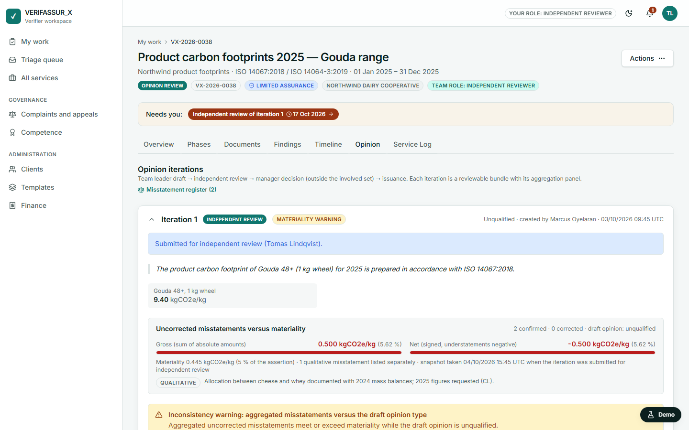
C16 · Tomas Lindqvist · 4 s Warning acknowledged in writing, never bypassedC17 · Helena Brandt · 5 s Decision refused inside the involved set
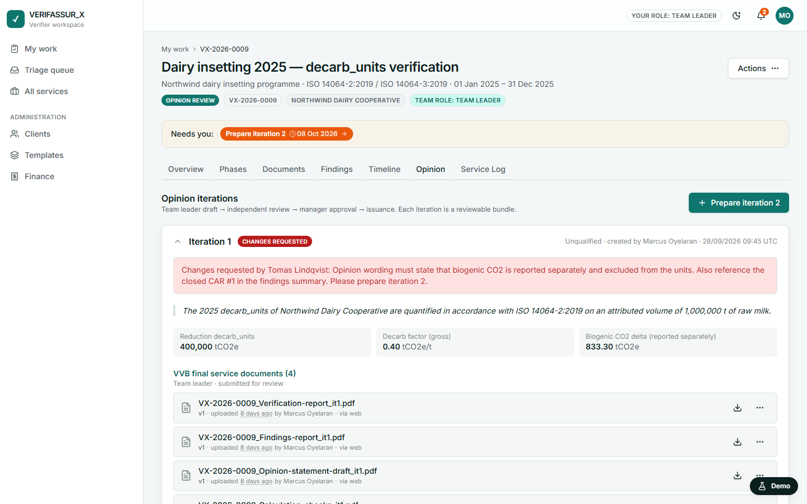
C18 · Marc Lefèvre · 12 s Issuance · eight visible steps
Materiality, aggregated against every misstatement.
A warning that must be acknowledged in writing.
A decision refused to anyone who touched the figures.
And issuance in eight visible steps: lock, hash, render, code, write back, notify.
Music Beat continues; drop the percussion for the last 3 s of C18 so the "Opinion issued" moment breathes.
Edit The issuance clip is the hero of the teaser: slow the cursor, keep the whole dialog in frame, let the ticks land in rhythm with the list in the narration.
T7
Montage — Keep and Prove
2:25–2:51 · 26 s · montage · 37/56 words
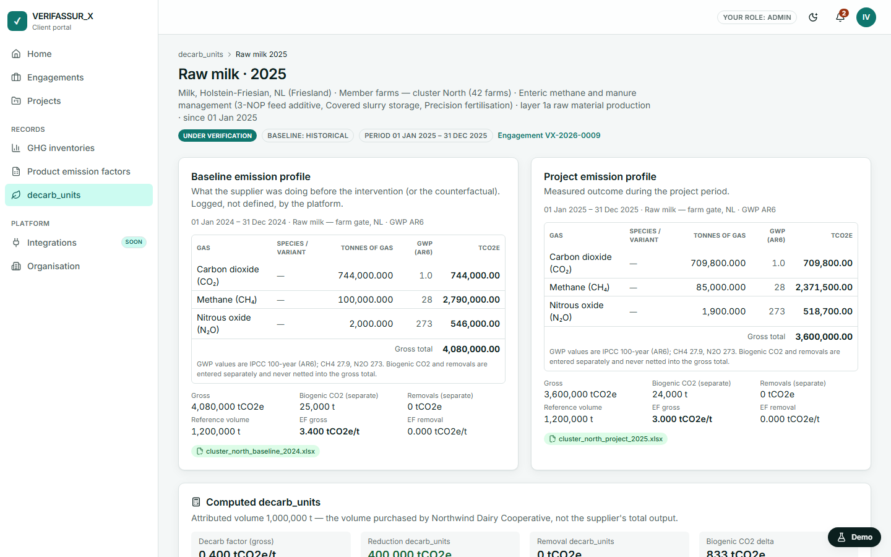
C23 · Ingrid Vos · 6 s decarb_units · computed on the volume you boughtC24 · Ingrid Vos · 6 s Unit mismatch refused, never multipliedC19 · (dialog) · 5 s Public verification page · no account needed
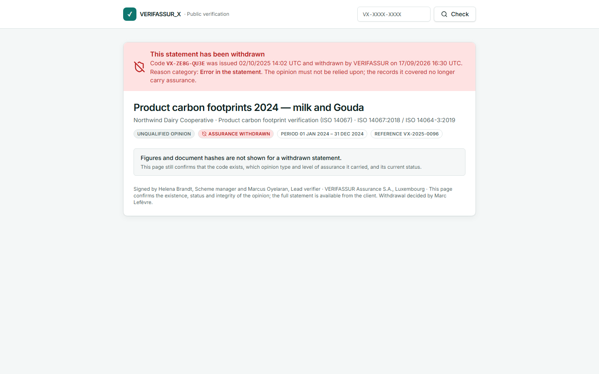
C20 · any · 5 s Withdrawn · banner stays, code still resolves
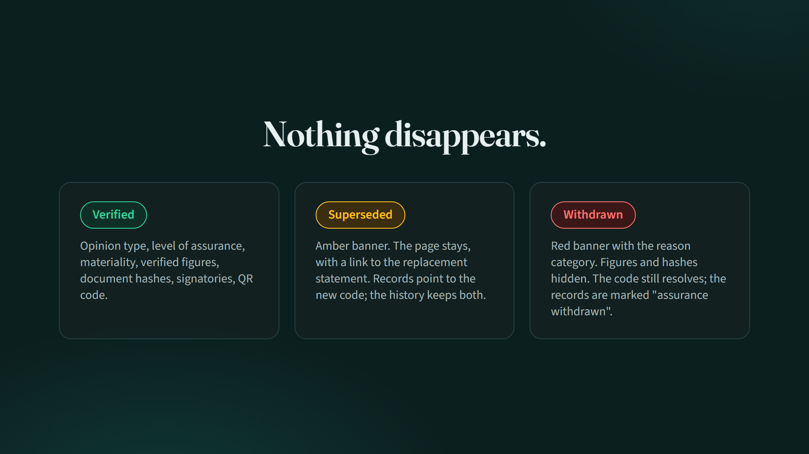
T10 · graphic · 4 s Nothing disappears.
Verified numbers live as records. Four hundred thousand decarb units, computed on the volume you actually bought, with a unit mismatch refused on sight.
Anyone can check a statement. Including the ones that were withdrawn.
Nothing disappears.
Music Beat continues.
Edit Zoom 110 % on the "Unit mismatch" refusal and on the red withdrawn banner. T10 is a hard cut to ink: the three status chips, no motion.
T8
Montage — Accreditation-grade
2:51–3:07 · 16 s · montage · 20/34 words
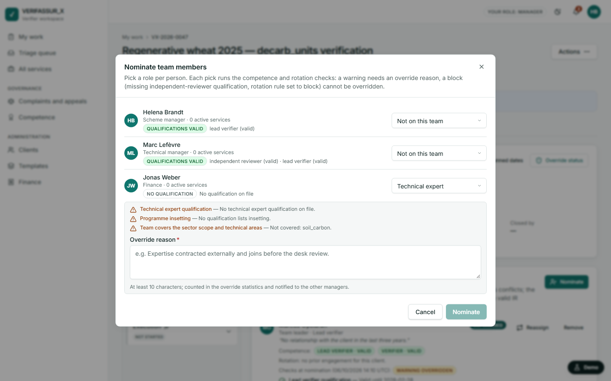
C26 · Helena Brandt · 6 s Hard block · no reason lifts it
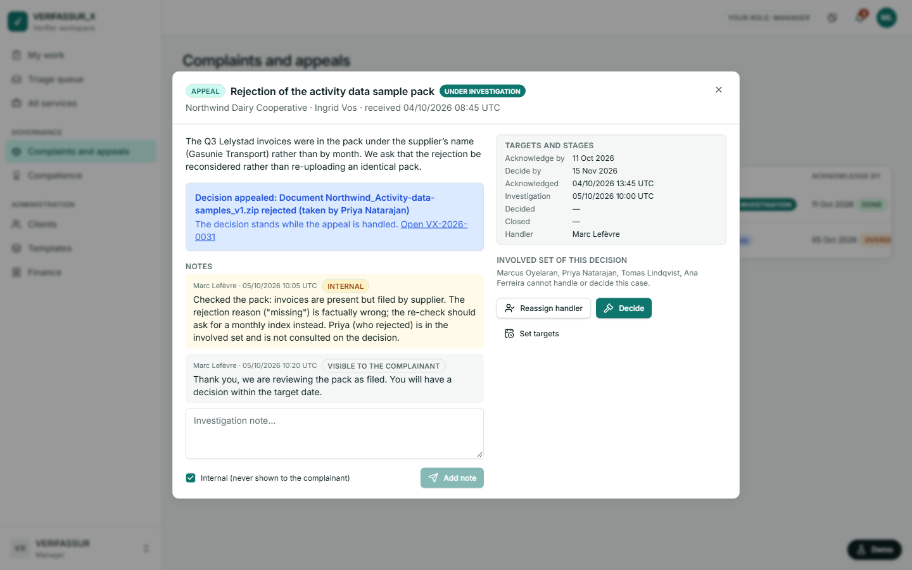
C28 · Helena Brandt · 5 s Complaints and appeals · handled outside the involved set
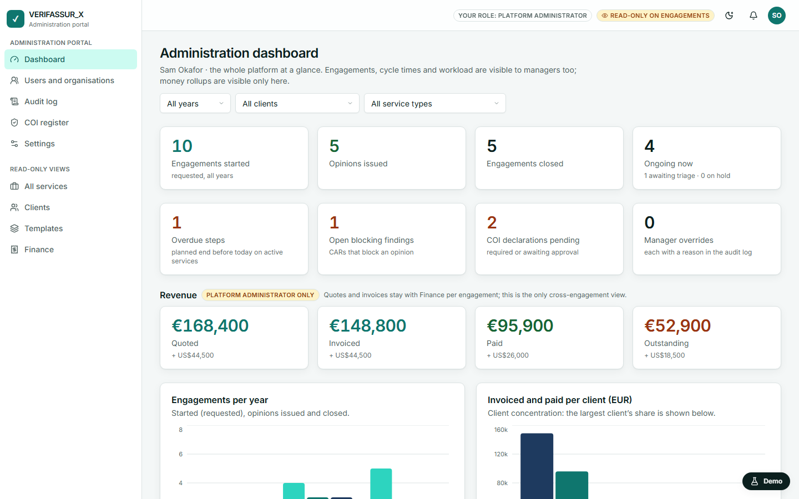
C32 · Sam Okafor · 5 s Administrator · sees everything, changes nothing
Competence and rotation, checked at nomination.
Complaints, handled outside the involved set.
An administrator who sees everything and changes nothing.
Music Beat continues, then a half-bar rest before the next scene.
Edit Zoom on the red "Blocked" line in C26 and on the "Platform administrator only" badge in C32.
T9
The roadmap is in the product
3:07–3:29 · 22 s · long · 31/47 words
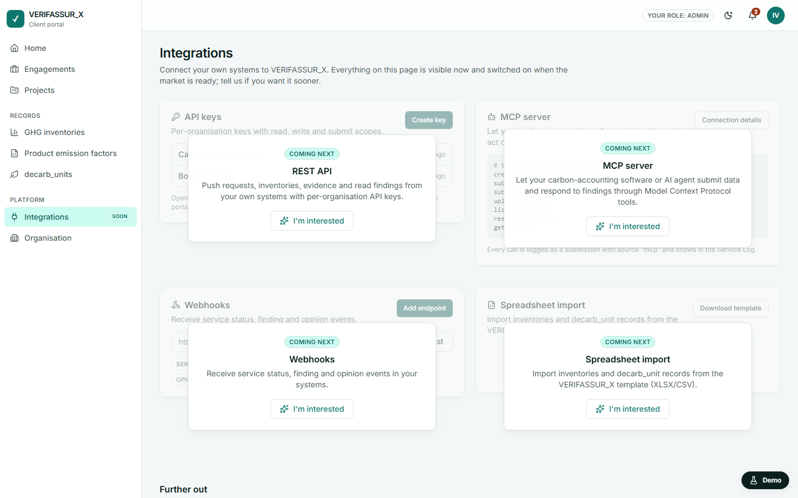
C37 · Ingrid Vos · 10 s Integrations: API keys, MCP server, webhooks, spreadsheet import in preview; "I’m interested".
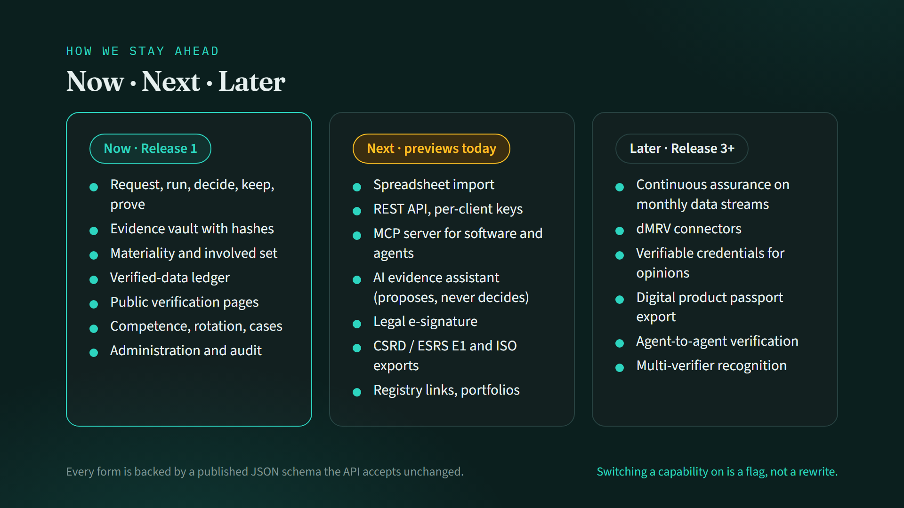
M04 · graphic · 12 s Now · Next · Later
And the roadmap is in the product. API, MCP server, AI evidence assistant, report exports, then continuous assurance.
Visible today. Switched on when you are ready. A flag, not a rewrite.
Music Beat resolves to the melodic bed.
Edit Let the Now/Next/Later columns fill in time with the narration.
T10
Close
3:29–3:43 · 14 s · card · 10/30 words
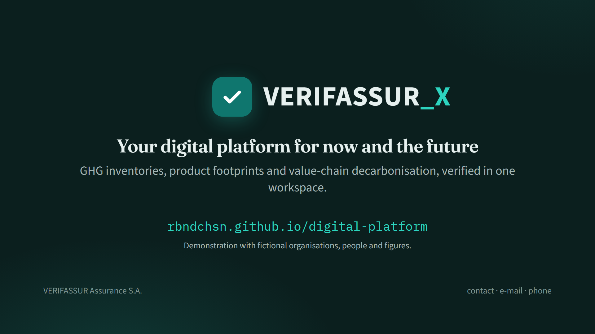
M05 · graphic · 14 s VERIFASSUR_X · Your digital platform for now and the future · demo URL · Demonstration with fictional data · contact
VERIFASSUR_X. Sustainability assurance, verified in one workspace.
See it live.
Music Final chord; tail out over the end card.
Edit Hold the end card 6 s after the last word. Captions off for the end card.
VERIFASSUR_X — Full product film about 10:00 · planned 10:07 · 1193 words (9:11 at 130 wpm)
Website, investor and client meetings, onboarding of partners. The viewer may pause; the chapters are self-contained.
F1F2F3F4F5F6F7F8F9F10F11F12F13
F1
Cold open — three questions
0:00–0:22 · 22 s · long · 41/47 words
M01 · graphic · 9 s Who verified this number? / To what level? / Can anyone check?C19 · (dialog) · 13 s Public verification page: code typed, green banner, slow scroll to the hashes.
Who verified this number? To what level of assurance? And can anyone check?
Today, most verification statements live in an inbox. They cannot answer.
This one can. A code, a status, the figures, and the hash of every document behind them.
Music Silence for 4 s, one sustained low note, bed starts on the cut to the public page.
Edit Same cold open as the teaser, three seconds longer on the public page so the scroll reaches the hashes.
F2
Title
0:22–0:30 · 8 s · card · 0/17 words
T02 · graphic · 8 s VERIFASSUR_X · The digital platform for sustainability assurance
no narration
Music Bed rises; soft hit on the logo.
Edit Dissolve in, hold, dip to ink.
F3
The problem — three audiences
0:30–1:20 · 50 s · long · 99/108 words
M02 · graphic · 6 s E-mail. Folders. PDFs. → Assurance is a black box.T04 · graphic · 25 s Three columns revealed one at a time: Clients · Verifiers · Everyone downstream
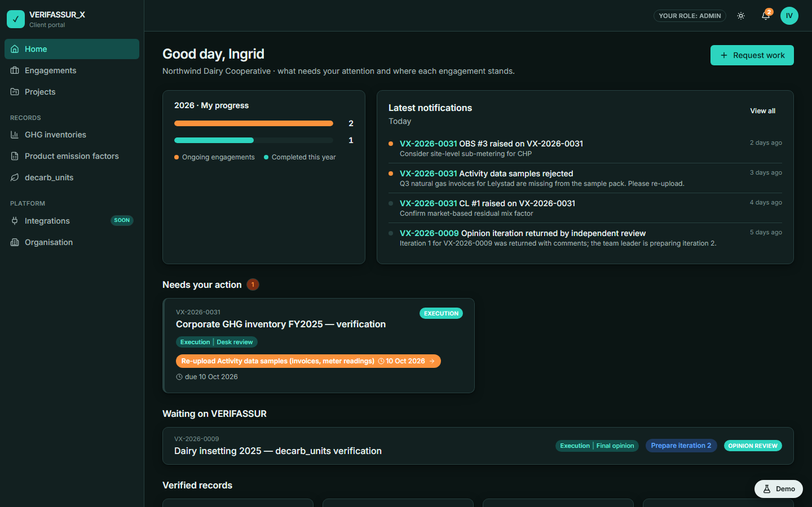
C40 · Ingrid Vos · 9 s Public page in dark mode, desaturated, with a slow push-in.
made in the editor
editor · 10 s On ink: "Is this still current?" in Fraunces, then the answer fades in underneath: a verification code.
An assurance engagement today runs on e-mail, shared folders and spreadsheets.
For the client, it is a black box. Which document is missing? Which finding is blocking the opinion? When will the statement arrive? Nobody can say without asking.
For the verifier, accreditation is a paper exercise. Impartiality, competence, independent review, separation of decisions: proven after the fact, with checklists and filing. A rule that lives in a procedure can be skipped.
And for everyone downstream, buyers, lenders, programmes, regulators, a claim is only as good as its proof. A PDF cannot answer the question "is this still current?"
Music Sparse bed, no percussion. Nothing under the last question.
Edit This is the longest spoken segment; keep the visuals slow. Reveal each column of T04 exactly when its audience is named. The final question sits alone on ink for 2 s before the answer appears.
F4
What VERIFASSUR_X is
1:20–2:10 · 50 s · long · 97/108 words
M06 · graphic · 7 s Two things in one productC02 · Ingrid Vos · 12 s Client home in full colour: progress, Needs your action, Waiting on VERIFASSUR, Verified records.C22 · Ingrid Vos · 8 s GHG inventory 2025: lines per gas, declared vs verified, evidence chips.
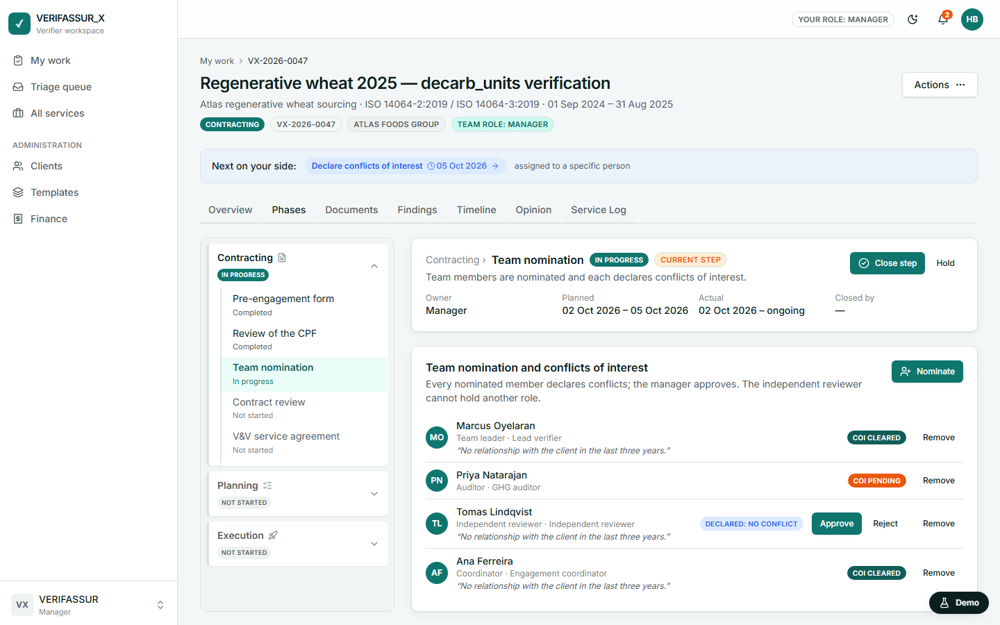
C07 · Helena Brandt · 8 s Team nomination step with COI statuses (verifier side).
made in the editor
editor · 10 s On ink, two lines: "VERIFASSUR_X verifies." / "The platform shows. People decide."M03 · graphic · 5 s Request → Run → Decide → Keep → Prove
VERIFASSUR_X replaces the black box with one workspace.
It is two things in one product. A client portal, where a company requests, follows and archives the independent verification of its GHG inventory, its product carbon footprints, its value-chain decarbonisation and its carbon projects.
And a verified-data ledger, where every opinion writes its figures back as records the company can prove, year after year.
Behind both sits the verifier workflow that makes the work accreditation-grade by construction.
VERIFASSUR_X verifies. It never issues or trades carbon units, and it never computes a client's emissions.
The platform shows. People decide.
Music Bed opens: percussion enters on "one workspace".
Edit Colour returns on the cut to C02. M03 at the end introduces the five chapter words that structure the next five minutes.
F5
Chapter 1 — Request
2:10–2:55 · 45 s · montage · 93/97 words
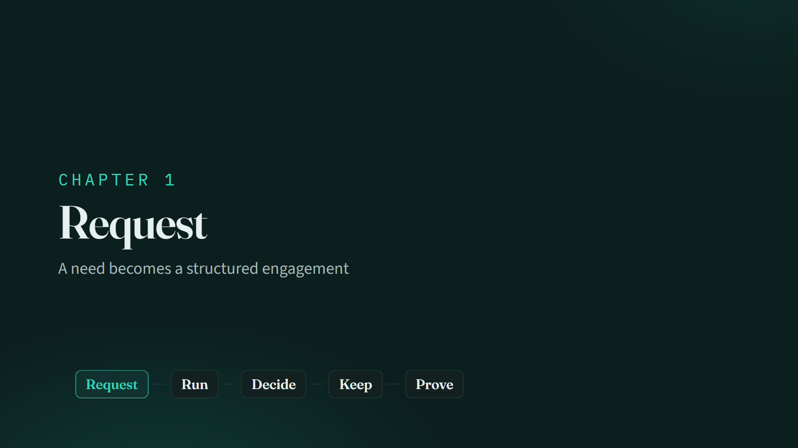
CH1 · graphic · 3 s 1 · RequestC04 · Ingrid Vos · 10 s Request wizard · five stepsC05 · Ingrid Vos · 6 s Generated pre-engagement form
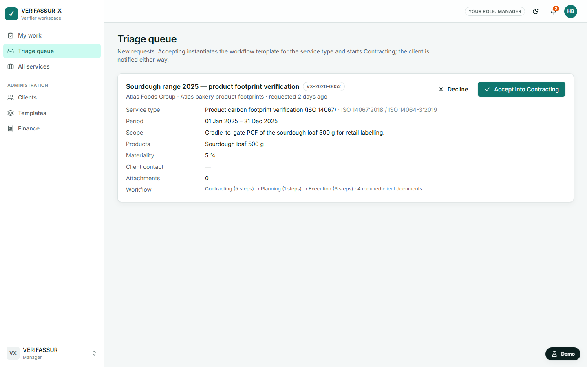
C06 · Helena Brandt · 7 s Triage with rotation historyC07 · Helena Brandt · 6 s Conflict-of-interest declarationsC08 · Amina Wanjiru · 7 s Agreement accepted · name, time, hash
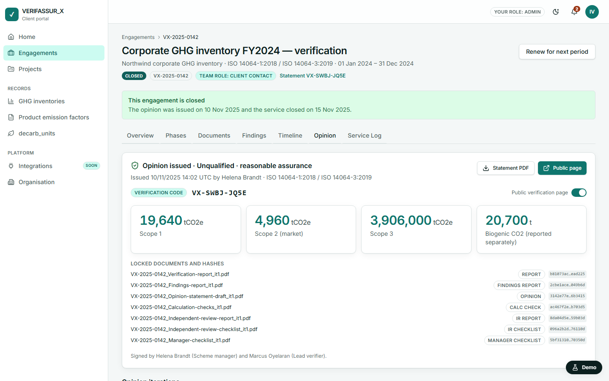
C42 · Ingrid Vos · 6 s Renewal pre-filled from last year
Chapter one. Request.
A five-step wizard turns a need into a structured engagement: project, service type and standard, scope and period, level of assurance, attachments. The template already lists the documents it will require.
A generated pre-engagement form lets the verifier triage immediately.
Technical scope and impartiality are approved. The team is nominated, and every member declares conflicts of interest before the service even opens for them.
The service agreement is accepted in the platform: name, time, and the hash of the document.
And next year, the renewal is pre-filled from this year.
Music Montage pulse begins. Cut on the beat.
Edit Chapter card 3 s with a whip of the flow bar. Label chips bottom-left. Push-in on every clip. Lower-third on the first appearance of Helena (C06) and Amina (C08).
F6
Chapter 2 — Run
2:55–3:45 · 50 s · montage · 109/108 words
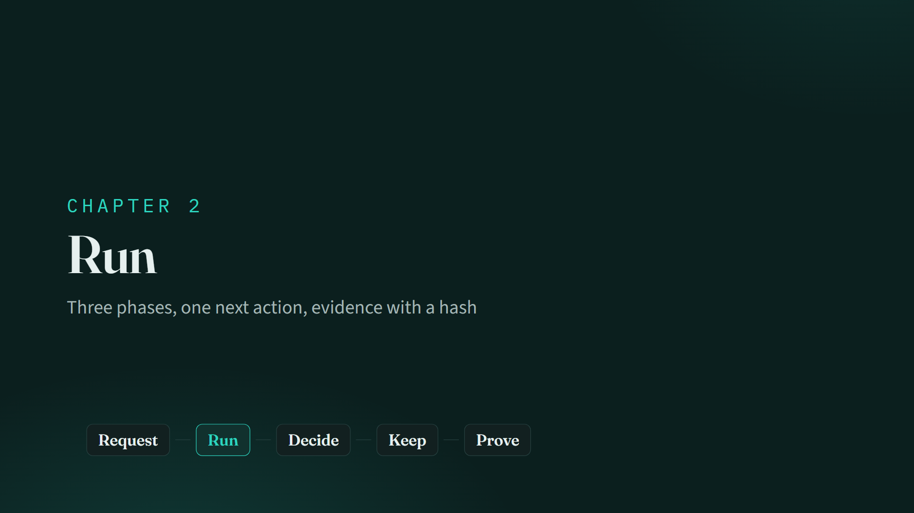
CH2 · graphic · 3 s 2 · RunC09 · Ingrid Vos · 6 s Three phases · one template per service typeC03 · Ingrid Vos · 5 s One next action, alwaysC10 · Ingrid Vos · 9 s Versioned evidence · SHA-256C11 · Priya Natarajan · 3 s (no label: the Accept toast)
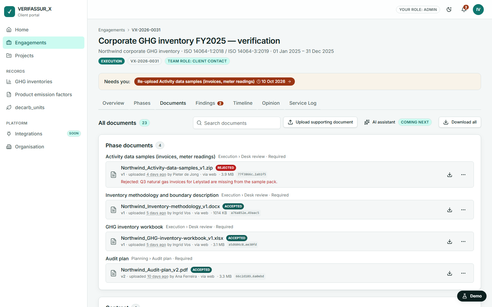
C12 · Ingrid Vos · 5 s Download all · manifest with hashesC13 · Pieter de Jong · 8 s Findings block the opinion until closed
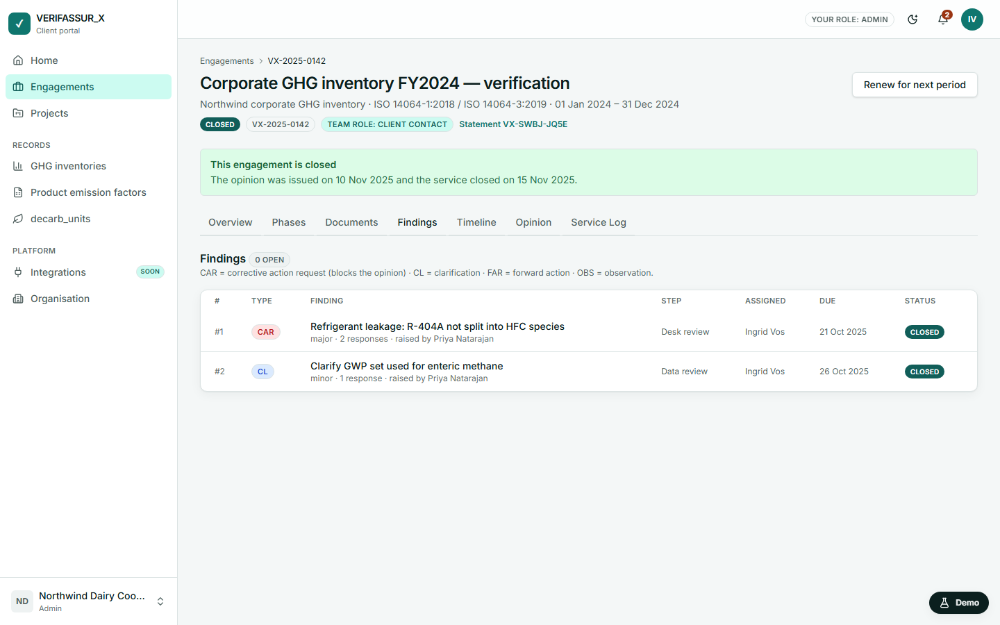
C14 · Priya Natarajan · 4 s (no label: the blocking banner disappears)
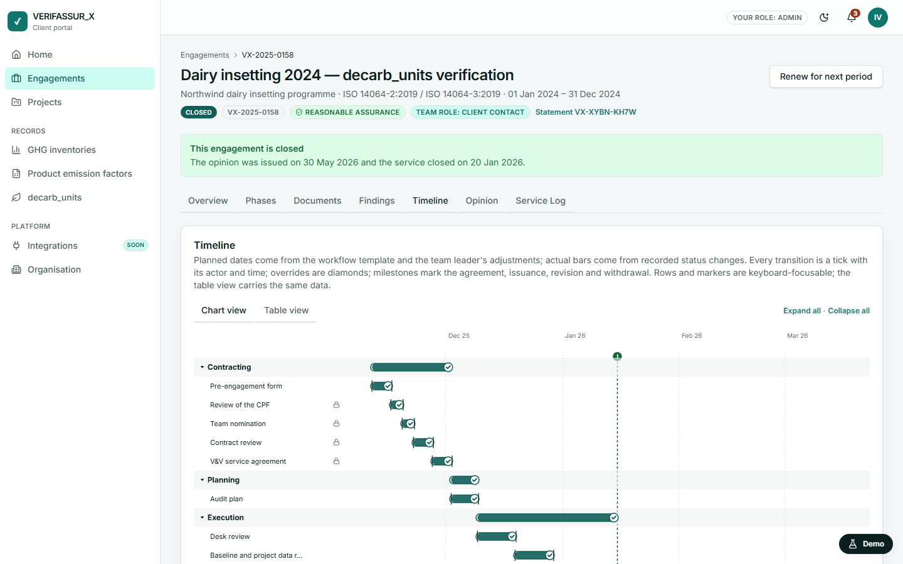
C36 · Ingrid Vos · 7 s Timeline · planned vs actual
Chapter two. Run.
Three phases, Contracting, Planning, Execution, driven by a workflow template for the service type.
There is always exactly one next action per engagement. Orange means it is on you. Blue means VERIFASSUR is working on it. It is computed from the workflow, never typed by hand.
Every step has its required document slots. Here the auditor rejected a sample pack with a reason. The client re-uploads: version two, new hash, provenance line. Nothing is ever overwritten.
Findings run as threads with attachments. A corrective action request blocks the opinion until it is closed.
And the timeline shows planned against actual, with a tick for every transition.
Music Pulse continues.
Edit Zoom on the orange pill (C03), on "Submitted · v2" and its hash (C10), on the blocking banner (C13). Lower-thirds for Priya (C11) and Pieter (C13).
F7
Chapter 3 — Decide
3:45–5:00 · 75 s · montage · 160/162 words
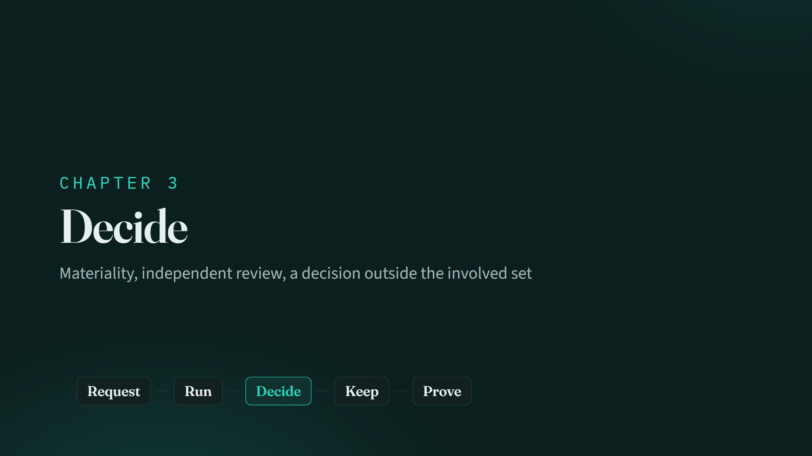
CH3 · graphic · 3 s 3 · DecideC15 · Tomas Lindqvist · 10 s Misstatements aggregated against materialityC16 · Tomas Lindqvist · 10 s Warning acknowledged in writing, never bypassedC17 · Helena Brandt · 10 s Decision refused inside the involved setC18 · Marc Lefèvre · 30 s Issuance · eight visible steps
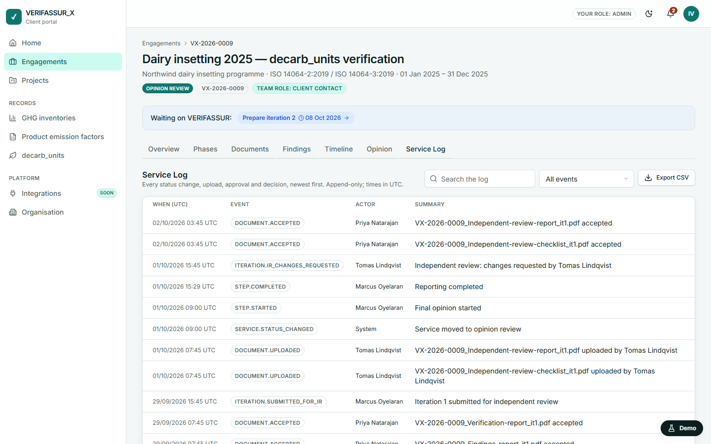
C34 · Sam Okafor · 12 s Service Log · append-only
Chapter three. Decide. This is where accreditation stops being paperwork.
Materiality is set in planning and approved by a manager. Every difference the team finds is aggregated against it. Here the misstatement exceeds the threshold while the draft opinion is unqualified, so the platform raises a warning. A warning, not a block. The independent reviewer must acknowledge it in writing. The judgement stays human.
Now the decision. Helena is a manager, but she entered a verified value on this engagement. That puts her in the involved set, so the decision is refused to her. The button is not hidden. It is disabled, with the reason, and the name of the manager who can decide.
Marc, outside the involved set, acknowledges, approves, and issues.
Lock the documents. Hash them. Render the statement. Create the public code. Write the verified figures to the client's records. Notify everyone. Eight steps, each visibly completing.
Every decision lands in the Service Log: who, when, why.
Music Pulse continues through C17; drop the percussion for the issuance (C18) and let a slow melodic line carry the eight ticks; pulse returns on C34.
Edit Longer clips here on purpose: this chapter carries the message. Zoom on the greyed checklist item (C16), on the disabled button and its notice (C17). Lower-thirds for Tomas, Helena and Marc. The issuance is the hero of the film: the narration list ("Lock the documents. Hash them…") should land one phrase per tick.
F8
Chapter 4 — Keep
5:00–5:50 · 50 s · montage · 110/108 words
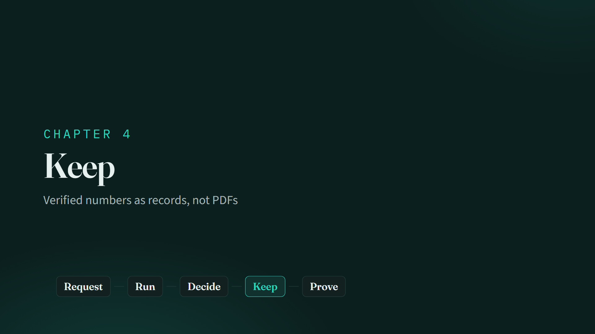
CH4 · graphic · 3 s 4 · KeepC22 · Ingrid Vos · 10 s GHG inventory · per scope, gas, yearC23 · Ingrid Vos · 10 s decarb_units · computed on the volume you boughtC24 · Ingrid Vos · 12 s Unit mismatch refused, never multiplied
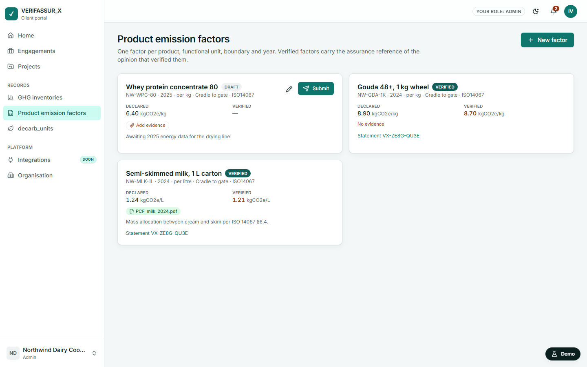
C25 · Ingrid Vos · 10 s Assurance history on every record
made in the editor
editor · 5 s On ink: "Numbers, not PDFs."
Chapter four. Keep.
Verified numbers live as records, not as PDFs. GHG inventories by year, scope, category and gas, with biogenic CO2 and removals reported separately, declared next to verified, evidence on every line.
A decarb unit is one tonne of CO2e between a baseline and a project outcome in the value chain, computed on the volume the client actually bought. Baseline three point four, project three point zero, one million tonnes: four hundred thousand units.
Units are explicit. Change tonnes to litres and the platform refuses. A kilo-to-tonne slip can never inflate a claim by a thousand.
Every record carries its level of assurance, its statement, and its history.
Music Pulse continues, lighter.
Edit Zoom on 400,000 (C23), on the red "Unit mismatch" (C24), on the "Assurance withdrawn" badge and the history drawer (C25).
F9
Chapter 5 — Prove
5:50–6:37 · 47 s · montage · 81/101 words
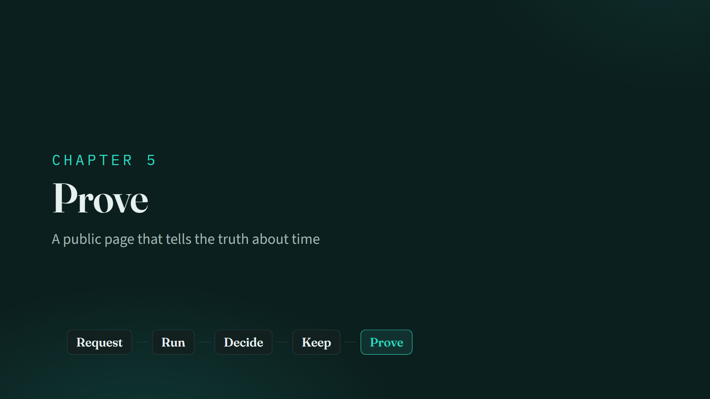
CH5 · graphic · 3 s 5 · ProveC19 · (dialog) · 12 s Public verification page · no account neededC20 · any · 10 s Withdrawn · banner stays, code still resolvesC21 · any · 8 s Superseded · links to the replacementC43 · Helena Brandt · 8 s (no label: the statement card and the history on the verifier side)T10 · graphic · 6 s Nothing disappears.
Chapter five. Prove.
Anyone can check a statement without an account: opinion type, level of assurance, materiality, the verified figures, the hash of every locked document.
And the page tells the truth about time. This statement was withdrawn because of an error. The banner says so, the figures are gone, the code still resolves. This one was superseded by a revision, and links to its replacement.
A statement never disappears. The records that relied on it are re-marked the same way.
Music Pulse thins out; the last line sits on a held chord.
Edit Zoom on the red banner (C20) and the amber link (C21). T10 is a hard cut to ink.
F10
Accreditation-grade by construction
6:37–7:53 · 76 s · montage · 166/164 words
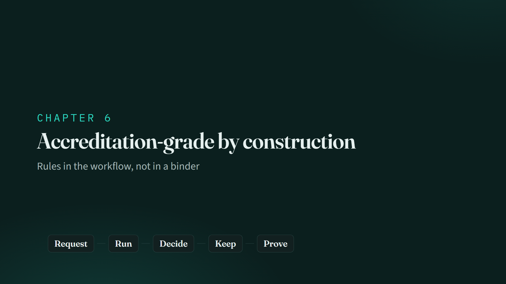
CH6 · graphic · 3 s 6 · Accreditation-grade by construction
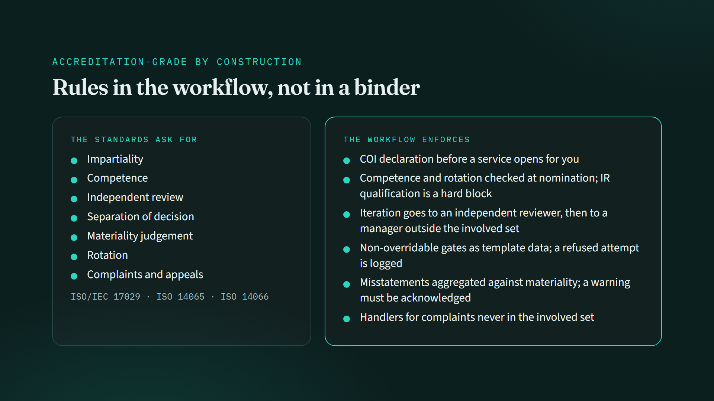
T07 · graphic · 8 s Standards → controls enforced by the workflowC26 · Helena Brandt · 10 s Competence and rotation checked at nomination
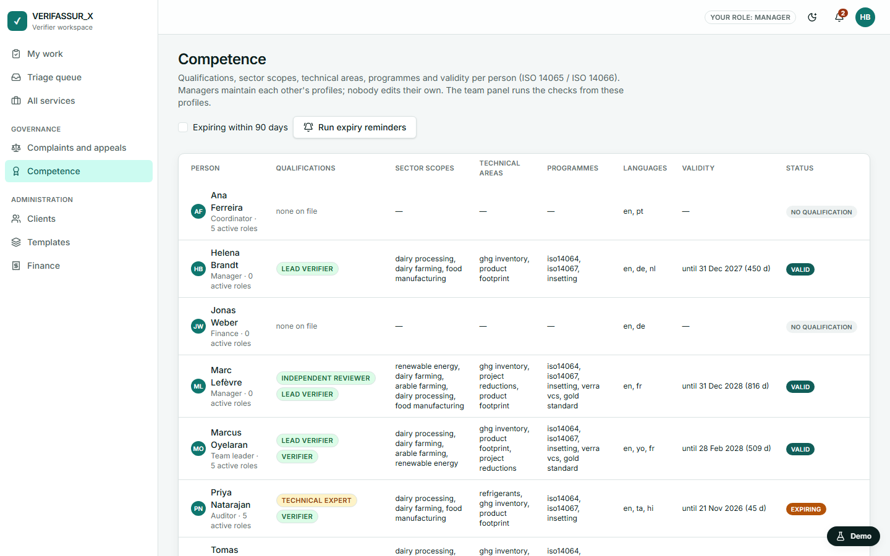
C27 · Helena Brandt · 5 s (no label: competence page, expiring certificate)C28 · Helena Brandt · 9 s Complaints and appeals · handled outside the involved set
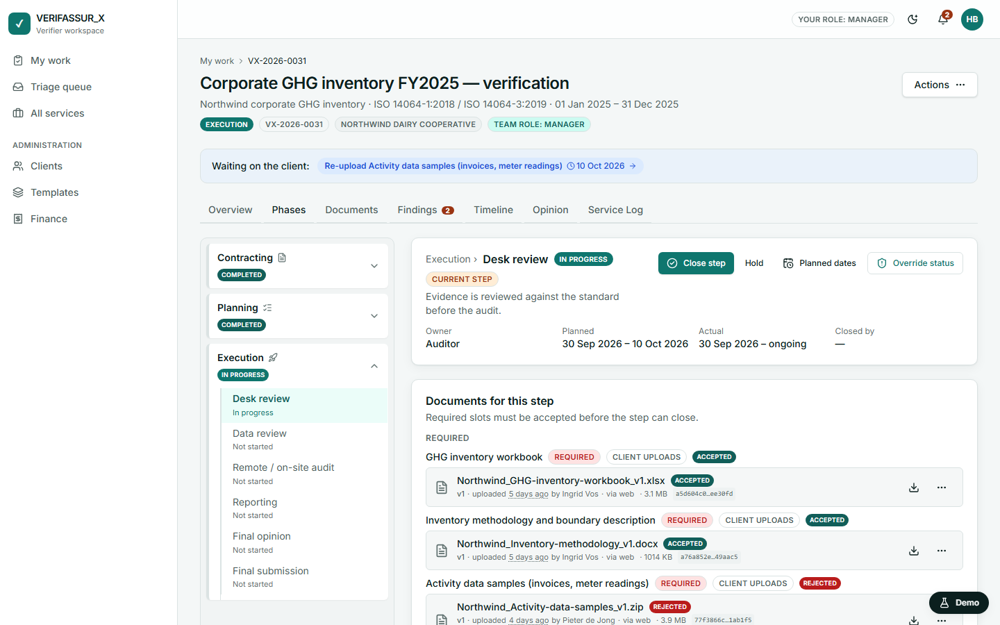
C30 · Helena Brandt · 9 s Override with a reason · never silentlyC31 · Helena Brandt · 5 s Non-overridable gates · template dataC32 · Sam Okafor · 9 s Administrator · sees everything, changes nothingC33 · Sam Okafor · 6 s (no label: read-only banner, break-glass)
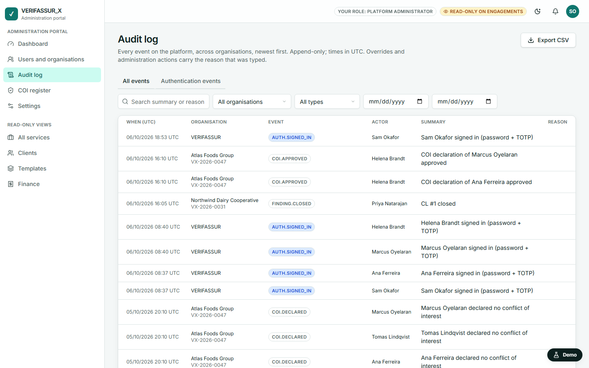
C35 · Sam Okafor · 6 s Global audit log and COI register
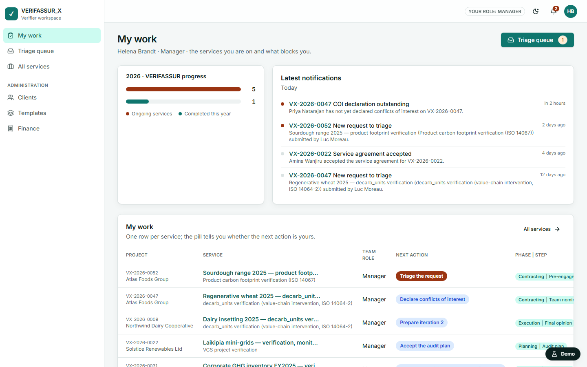
C39 · Helena Brandt · 6 s Templates as data · every save is a version
ISO 17029, 14065 and 14066 ask for impartiality, competence, independent review, rotation, and complaint handling. In VERIFASSUR_X those rules live in the workflow, not in a binder.
Every nomination runs the competence and rotation checks from the template. A gap is a warning the manager can override with a written reason, counted in the statistics. A missing independent-reviewer qualification is a block that no reason can lift.
Complaints and appeals have targets, overdue flags, and a handler who is never in the involved set of the decision being appealed.
When the normal flow is stuck, a manager can override a step, but only with a reason, only in the log, and never on the gates the template locks: impartiality, the agreement, independent review, issuance.
Platform administration is separated from assurance. The administrator sees everything, including the money, and changes nothing. Every event is appended to an audit log.
The rules themselves are data: versioned templates, edited with a reason.
This is what an accreditation body audits.
Music Pulse returns, steady and low.
Edit Zoom on "Blocked: no override lifts this rule" (C26), "Not offered (involved set)" (C28), the reason gate (C30), the greyed Force complete (C31), "Platform administrator only" (C32). Lower-third for Sam on C32.
F11
What makes it different
7:53–8:29 · 36 s · long · 45/78 words
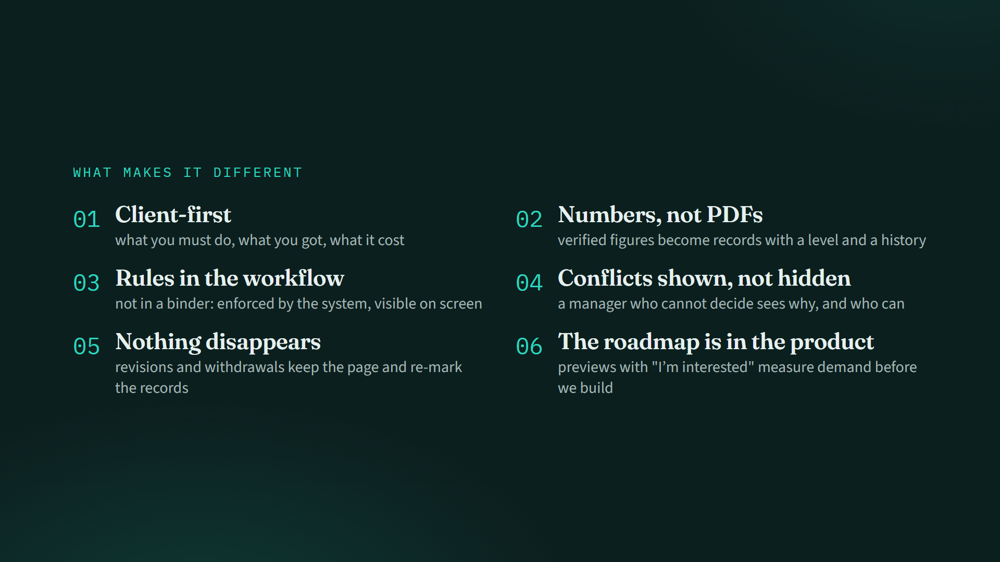
T08 · graphic · 26 s Six differentiators, revealed one line at a time in the editorC40 · Ingrid Vos · 10 s Light and dark · keyboard-navigable
Six things make it different.
Client-first: it leads with what you must do, what you got, and what it cost.
Numbers, not PDFs.
Rules in the workflow, not in a binder.
Conflicts are shown, not hidden.
Nothing disappears.
And the roadmap is in the product.
Music Melodic bed, no percussion.
Edit Reveal each line of T08 as it is spoken (six keyframes). The dark-mode B-roll under the last line is a breath before the roadmap.
F12
The future — now, next, later
8:29–9:35 · 66 s · long · 142/143 words
M04 · graphic · 14 s Now · Next · LaterC37 · Ingrid Vos · 14 s Roadmap in the product · "I’m interested"
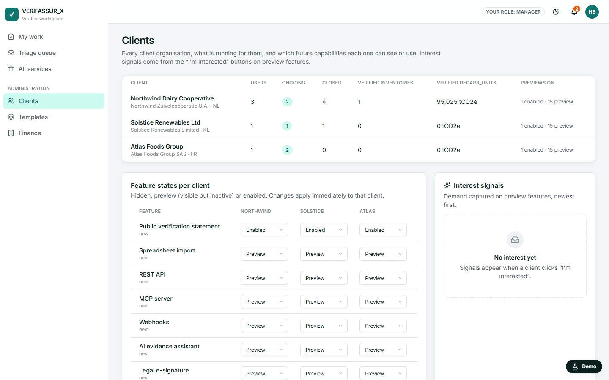
C38 · Helena Brandt · 8 s Switched on per client · a flag, not a rewrite
made in the editor
editor · 18 s On ink, three lines fading in: "Continuous assurance on monthly data streams" / "Verifiable credentials for opinions" / "A verified figure that travels with the product" (digital product passport)
made in the editor
editor · 12 s On ink: "A flag, not a rewrite." with a small JSON-schema snippet rendered faintly behind it
Now, next, later.
Now: a complete, accreditation-grade engagement and ledger.
Next, visible today as previews: spreadsheet import, a REST API with per-client keys, and an MCP server so a client's carbon-accounting software, or its AI agent, can submit data and answer findings directly. An AI evidence assistant that classifies uploads and drafts findings for the auditor to decide. Legal e-signature. CSRD and ISO report exports. Registry links. Every preview has an "I'm interested" button, so demand is measured before anything is built.
Later: continuous assurance on monthly data streams, digital MRV connectors, verifiable credentials for opinions, a digital product passport export. Assurance becomes a live signal instead of an annual event, and a verified figure travels with the product.
Every form is already backed by a published schema the API accepts unchanged. Switching a capability on is a flag, not a rewrite.
Music Bed builds gently to its widest point on "travels with the product", then settles.
Edit M04 columns fill in time with "now", "next", "later". Keep the "Later" lines on ink slow and generous; this is the investor beat.
F13
Proof you can click, and close
9:35–10:07 · 32 s · long · 50/69 words
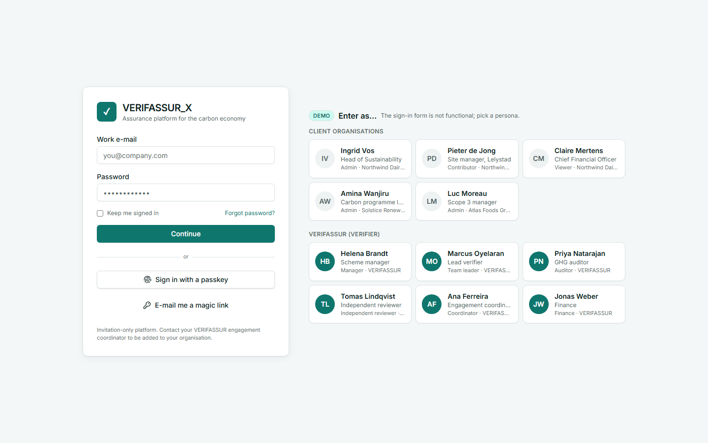
C01 · any · 4 s The persona grid on sign-in.C41 · any · 4 s The Demo panel: thirteen personas, sixteen chapters.
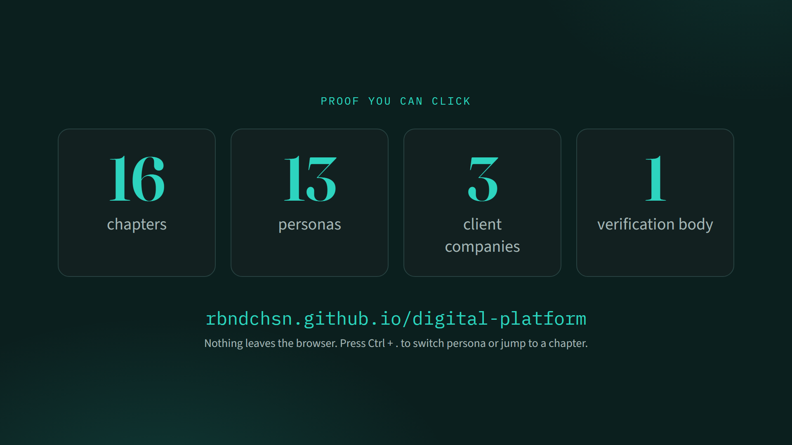
T12 · graphic · 10 s 16 chapters · 13 personas · 3 client companies · 1 verification body · demo URLM05 · graphic · 14 s End card: logo, tagline, URL, fictional-data line, contact
Everything you have seen is live, in a clickable demo with fictional data: sixteen chapters, thirteen personas, three client companies and one verification body.
VERIFASSUR_X. The digital platform for sustainability assurance. GHG inventories, product footprints and value-chain decarbonisation, verified in one workspace.
Your digital platform, for now and the future.
Music Final phrase and chord; tail out over the end card.
Edit Hold the end card 8 s after the last word. Captions off on the end card.